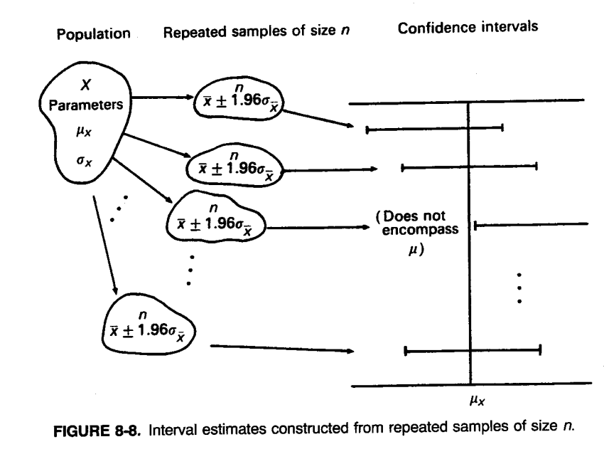
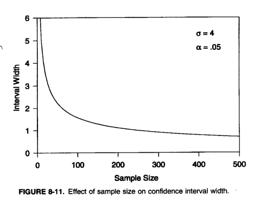
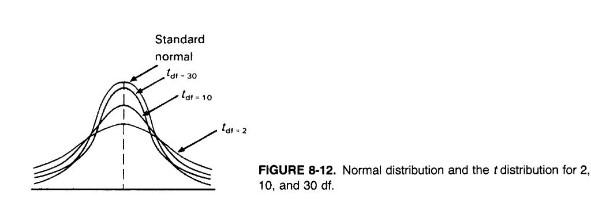

Excursion: Confidence Intervals for regression coefficients
2 Remember from Sampling Lecture
Each statistic has a distribution because it is calculated from random sample of observations, which are drawn from their underlying population.
Different samples lead to different outcomes of their statistics, and thus their distribution.
The cumulative probability of obtaining a statistic of a given magnitude can be evaluated from its underlying sampling distribution.
This allows us to identify extreme sample observations with respect to the underlying population distribution.
Obtaining representative samples from the population is substantially more likely, i.e., center of the distribution, than obtaining non-representative samples, whose statistics fall into the tails of the statistic’s distribution (every low, i.e., close to zero, or high, i.e., close to zero or one of its cumulative distribution).
3 Parametric Statistical Inference: Estimation
Statistical inference includes all procedures that draw conclusions about an unknown population (either its parameters or its overall distribution) based on one set of \(n\) sample observations.
Question: Where is uncertainty in inferential statistics coming from?
Answer: Drawing a random sample from the underlying population. Drawings by chance differ from sample to sample and thus from sample statistic to sample statistics, with a small likelihood of obtaining an extreme sample. This likelihood can be evaluated using probability calculus.
Statistical inference deals with:
[a] the estimation of a population characteristic, which usually is a parameter of the underlying population distribution, i.e., \(\mu\) or \(\sigma^2\) for the normal distribution and quantifying the uncertainty of the estimate.
[b] the testing of hypotheses (initial or hypothetical assumption about the population characteristics) with regards to an underlying population distribution.
Based on the set of sample observations a specific hypothesis can be rejected at a given error probability \(\alpha\) under the assumption that the hypothesis is true (see BBR Chapter 8).
In both approaches a sample \(\{X_1, X_2, \ldots, X_n\}\) of given size \(n\) is drawn and a sampling statistics function\(T\) is selected that is related to the unknown parameter \(\theta\) of the population distribution:
\[\hat{\theta} = T(x_1, x_2, \ldots, x_n)\]
The hat on top of \(\hat{\theta}\) denotes the estimate of the unknown population parameter \(\theta\).
For the estimation approach, \(\hat{\theta}\) allows expressing that the true population parameter \(\theta\) falls with a given level of certainty into an interval around \(\theta\).
For the hypothesis testing approach, \(\hat{\theta}\) allow us to make statements about the probability that the observed sampling statistic differs significantly from an underlying hypothetical (assumed) reference population parameter\(\theta_0\) (the naught subscript in \(\theta_0\) refers to the assumed population characteristic).
4 Statistical Estimation
Def. Point Estimation: A single number is calculated from the sample, and it is used as the best estimate\(\hat{\theta}\) of some unknown population parameter \(\theta\).
Def. Interval Estimation: In interval estimation the sample is used to identify a range\([\hat{\theta}_L, \hat{\theta}_U]\) of estimation bounds for the unknown population parameter\(\theta\), within which it is believed to be embedded with a given probability\(1 - \alpha\).
The complement error probability \(\alpha\) measures the probability that the parameter is outside the confidence interval.
5 Concept: Point Estimation
Def. Statistical Estimator and Statistical Estimate:
A statistical estimator is a generic function \(T\) of the \(n\) random variables \(X_1, X_2, \ldots, X_n\) from a sample. An estimator \(T\) is, therefore, also a random variable.
Once the sample is taken, the observed values of the random variables are known. These are denoted by \(x_1, x_2, \ldots, x_n\).
The value of the estimator \(\hat{\theta} = T(X_1 = x_1, X_2 = x_2, \ldots, X_n = x_n)\) is known as the statistical estimate of the population parameter \(\theta\).
There are many possible estimation rules (functional specifications of the estimator) to estimate a population parameter.
For instance, instead of the mean \(\bar{X}\) we may use the mode or median to estimate the central tendency parameter \(\mu\) of an underlying population.
Two criteria to evaluate whether a selected estimation procedure is the best, are:
[a] the bias and
[b] the efficiency.
Both criteria are based on the deviation of the estimator from its true population value, i.e., \(\hat{\theta} - \theta\).
The main challenge is to develop the distribution \(\Pr(\hat{\theta}_i)\) for discrete distribution or density \(f(\hat{\theta})\) for a continuous distribution of an estimation rule \(\hat{\theta} = T(X_1 = x_1, X_2 = x_2, \ldots, X_n = x_n)\).
Def. Unbiased Estimator: An estimator \(\hat{\theta}\) of a population parameter is said to be unbiased if its expected value is equal to the population parameter. That is, \(\hat{\theta}\) is unbiased if \(E(\hat{\theta}) = \theta\).
5.1 Biased versus Unbiased Estimator
FIGURE 8-3. Sampling distributions for a biased and an unbiased estimator of θ.
A biased estimator may become asymptotically unbiased as the sample size \(n\) increases. That is, the bias is consistently shrinking.
An example is the biased variance estimator \(\frac{1}{n} \cdot \sum_{i=1}^{n}(x_i - \bar{x})^2\), because for large \(n\) we get \(\lim_{n \to \infty} n \approx n - 1\).
In how far an estimator varies around the true population value from sample to sample is measured by the expected squared differences over all possible samples \(E\left[(\hat{\theta} - \theta)^2\right]\), that is, \(Var(\hat{\theta})\).
Ultimately, we want to have an unbiased estimation rule \(T\) that, in addition, has the smallest possible variability for sample to sample, i.e., the smallest variance.
This estimation rule has the lowest uncertainty (or equivalently the highest precision).
5.2 Unbiased Estimators with Different Variance
FIGURE 8-4. Sampling distributions for two unbiased estimators of θ.
Def efficient estimator: An unbiased estimation rule \(T\) is called efficient or best unbiased estimator, if it has the smallest variance compared to any other possible unbiased estimation rules.
Which estimation rule \(T\) is the most efficient may be dependent on the underlying, yet unknown, population distribution.
Def consistency: An estimator is called consistent if for an increasing sample size \(n \to \infty\) its estimated value \(\hat{\theta}_n\) (\(n\) stands for the underlying sample size) approaches the true population value \(\theta\) and its variance is shrinking.
That is, it converges in probability to the true population value:
For biased estimation rules with \(E(\hat{\theta}) \neq \theta\) the concept of efficiency does not apply and their mean square error needs to be evaluated:
There may be a tradeoff between a bias and the variance of an estimation rule \(T\) in the \(MSE\):
FIGURE 8-5. Difficulties in choosing a potential estimator.
Ultimately, one may prefer an estimation rule with a small bias but with a substantially smaller MSE over an alternative unbiased estimation rule with a high variance. \(\Rightarrow\) Such an estimation rule will on average be closer to the true population parameter than the unbiased rule.
To express the variability in original units, one can use the root mean square error:
\[RMSE = \sqrt{MSE} = \sqrt{Bias^2 + Variance}\]
Note that we cannot decompose this expression into independent summands
[a] of the bias and
[b] of the square-root of the variance,
because both terms are jointly under the square root.
6 Concept: Interval Estimation
FIGURE 8-6. Interval estimation of a population parameter θ.
Confidence intervals also depend on the \(n\) observed sample observations \(X_1, X_2, \ldots, X_n\).
These intervals provide more information than simple point estimators:
A narrower width defined by a lower and upper bound of the interval \(\left[\theta_L, \theta_U\right]\) with everything else being equal will be preferred (less uncertainty).
Both bounds are calculated from the sample observations \((X_1 = x_1, X_2 = x_2, \ldots, X_n = x_n)\).
This width is associated with the degree of certainty\(1 - \alpha\) of the population parameter \(\theta\) being in the confidence interval.
These intervals express the degree of certainty that the true parameter \(\theta\) is within the confidence interval, i.e.,
where \(\alpha\) is usually a small error probability that the true population parameter is outside the interval. We want to keep this error probability small.
The smaller the error probability \(\alpha\) becomes the wider the confidence interval will become, because we are increasing the chance that the interval will be covering the true population parameter.
7 Examples: Point Estimators
7.1 [a] Properties of the Mean Estimation Rule \(\bar{X}\)
TABLE 8-1. Point Estimators of μ, π, and σ²
For an underlying normal population distribution the arithmetic mean is unbiased and its variance is only 56% of that of the median’s variance. It is therefore most efficient.
Since the mean minimizes the sum of the squared deviations from the central value, it is highly sensitive to extreme value (leverages).
For symmetric distributions with heavy tails the mean may become less efficient than the median.
For highly asymmetric distributions the mean is even less efficient.
Trimmed means, which disregard the most extreme observations in both tails, are more robust because are not affected by these high leverage values. Their properties lie in-between those of the mean and median.
The advantage of working with the mean is that we know from the central limit theorem its underlying sampling distribution (the normal distribution) as the sample size increases.
7.2 [b] Population Proportion
Assuming the random variables is coded as \(X_i = \begin{cases} 1 & \text{for success} \\ 0 & \text{for failure} \end{cases}\).
Then the population proportion estimation rule is structurally equivalent to the arithmetic mean:
\[\hat{\pi} = \frac{\sum_{i=1}^{n} X_i}{n} = \frac{\# \text{ of successes}}{\# \text{ of trials}}\]
Therefore, the properties of the mean apply to the proportion estimator \(\hat{\pi}\) for large sample sizes.
7.3 [c] Population Variance
The estimator for the sample variance is \(S^2 = \frac{1}{n-1} \cdot \sum_{i=1}^{n}(X_i - \bar{X})^2\).
It is an unbiased estimator (over all potential samples of size \(n\) the estimator \(S^2\) will average to the population variance \(\sigma^2\)).
For a normal distributed underlying population \(S^2\) is the most efficient estimator for \(\sigma^2\).
Division by \(n\) would lead to a biased estimator, which systematically would underestimate the variance. However, for increasing sample sizes it is a consistent estimator.
Review of the reasons:
Use of \(\bar{X}\) minimizes the sum of the squared deviations.
We lose one degree for freedom because, once the mean is known, only \(n - 1\) observations need to be available (recall zero sum property \(\sum_{i=1}^{n} x_i - n \cdot \bar{x} = 0\)).
8 Example: Interval Estimation for the Population Mean
8.1 Review: Standard Normal Distribution
FIGURE 8-7. Sampling distribution of X̄.
For a standard normal distributed variable \((1-\alpha) \times 100\%\) of the observations are within the interval \(\left[z_{\alpha/2}, z_{1-\alpha/2}\right]\). That is,
\(z_{\alpha/2}\) is in the left tail of the standard normal distribution and therefore is negative. It has a small cumulative probability.
\(z_{1-\alpha/2}\) is in the right tail of the standard normal distribution and therefore is positive. It has a large cumulative probability.
8.2 Derivation of Confidence Interval
The estimator for the arithmetic mean is distributed as \(\bar{X} \sim N\left(\mu, \frac{\sigma}{\sqrt{n}}\right)\) (recall the central limit theorem).
Therefore, the confidence interval around the population expectation\(\mu\) is for a given mean estimation rule\(\bar{x} = T(X_1 = x_1, \ldots, X_n = x_n)\):
Since \(z_{0.025} = -1.96\) and \(z_{0.975} = 1.96\) at \(\alpha = 0.05\) the confidence interval can be calculated by \(\bar{x} \pm 1.96 \cdot \sigma_{\bar{x}}\):
8.3 Interpretation of Confidence Interval

FIGURE 8-8. Interval estimates constructed from repeated samples of size n.
The probability \(1 - \alpha\) can be interpreted as:
\((1 - \alpha) \times 100\%\) of the possible samples lead to confidence intervals that will cover the true but unknown population expectation\(\mu\).
8.4 General Rules
FIGURE 8-10. Effect of confidence level on interval width.
The smaller the error probability\(\alpha\) is (i.e., the confidence level \(1 - \alpha\) increases) the wider the confidence interval becomes and vice versa. See example to the right.

FIGURE 8-11. Effect of sample size on confidence interval width.
Furthermore, beside the error probability the width of the confidence interval also depends on the sample size through the standard error \(\sigma/\sqrt{n}\) of the mean.
As \(n\) increases, the confidence interval will shrink.
9 Example: Asymptotic Interval for the Expectation from a Nonnormal Population
In this case the underlying sampling distribution of the mean may become difficult to evaluate, however, we can make use of the central limit theorem for sufficiently large sample size\(n\) as then the mean becomes asymptotically normal distributed.
The required sample size depends on the underlying specific circumstances:
for well-behaved population distributions it may be as low as \(n \approx 30\) if just one parameter is estimated from the sample,
for the binomial distribution it depends on the underlying probability level \(\pi\). For \(\pi\)not too close to either end of its support \(\pi \in [0,1]\), a sample size of \(n \approx 100\) may be sufficient.
10 Example: Interval Estimation for the Expectation from a Normal Population with Unknown Standard Deviation
The unknown population standard deviation \(\sigma\) must be replaced by a sample estimate of the standard deviation \(S = \sqrt{\sum_{i=1}^{n}(X_i - \bar{X})^2/(n-1)}\).
Since \(Z = (\bar{X} - \mu)/\left(\frac{1}{\sqrt{n}} \cdot S\right)\) contains now two random variables (that is, \(\bar{X}\) and \(S\)). The random variable \(Z\) will no longer follow a normal distribution.
One can show that \(Z\) now follows the t-distribution with\(n - 1\)degrees for freedom:
Like the normal distribution also the t-distribution is symmetric.
For small degrees of freedom the t-distribution has substantially heavier tails, that is, it has a positive kurtosis.
For \(n > 30\), the t-distribution can be approximated by the normal distribution.
\(\Rightarrow\) The t-distribution approaches the standard normal distribution which does not use degrees of freedom:

FIGURE 8-12. Normal distribution and the t distribution for 2, 10, and 30 df.
The confidence interval for \(n \leq 30\) becomes:
where \(t_{\alpha/2, df=n-1}\) is the lower quantile and \(t_{1-\alpha/2, df=n-1}\) is the upper quantile.
Note: For \(n > 30\) a confidence interval based on the standard normal distribution with \(z_{\alpha/2}\) and \(z_{1-\alpha/2}\) can be used.
11 Example: Interval Estimation for the Success Probability of a Binomial Distributed Population
Because the proportion estimator \(\hat{\pi}_n = \frac{1}{n} \cdot \sum_{i=1}^{n} x_i\) has the structure of an arithmetic mean, we can apply for sufficiently large \(n\) and moderate probabilities \(\pi\) the central limit theorem.
Since the variance depends on the unknown population probability \(\pi\), its estimated value\(\hat{\pi}\) must substituted into the equation for the standard error:
Using the normal approximation \(\hat{\pi} \sim N\left(\pi, \frac{\hat{\pi} \cdot (1 - \hat{\pi})}{n}\right)\) the confidence interval for population success probability \(\pi\) becomes:
TABLE 8-5. Summary of Point Estimators and Confidence Intervals for π and μ
13 Sample Size Determination
Figure 8-11 showed that there is a relationship between the sample size \(n\) and the interval width of a confidence interval at a given confidence level \(1 - \alpha\).
These components can be used to determine the required sample size for a given error probability \(\alpha\) and desired widths of the bounds.
Steps:
Determine the estimator for population parameter for which we would like to determine the sample size and its distribution.
Determine the precision in terms of the error \(E\), which is half the interval width.
Determine the confidence level \(1 - \alpha\).
13.1 Assuming a Normal Distribution
For the population expectation from a normal distribution and a confidence level \(1 - \alpha\) we get:
To explore the effect of the error on the required sample size let us assume that error becomes twice as large: \(E^* = 2 \cdot |z_{\alpha/2}| \cdot \sigma/\sqrt{n}\) we get as required sample size:
Thus just a quarter of sample data is needed if we are willing to make the error twice as large.
13.2 General Rules
As the error \(E\)decreases the sample size \(n\)increases.
As the error probability \(\alpha\)decreases, the critical tail value \(|z_{\alpha/2}|\) becomes larger and, therefore, the required sample size \(n\)increases.
13.3 Assuming a Binomial Distribution
Standard deviation of binary distribution
For the proportion estimator \(\hat{\pi}\) of a binomial distribution we get:
Since \(\hat{\pi}\) is unknown before the sample is drawn, it must be determined exogenously (e.g., through experience).
Alternatively, the worst-case scenario of \(\pi = 0.5\) can be used, for which the variance \(\pi \cdot (1 - \pi)\) becomes the largest. This provides a conservative upper bound for \(n\).
Note, the error \(E\) must be substantially smaller than 0.5 for the interval covering the support \(\pi \in ]0, 1[\).
14 Excursion: Confidence Intervals for Regression Coefficients
FIGURE 12-9. Sampling for a regression model.
The regression coefficients \(b_0, b_1, b_2, \ldots\) are estimators of the true relationship:
between the dependent variable \(Y\) and the independent variables \(X_1, X_2, \ldots\)
A sampling perspective from an underlying population can be applied:
Thus, estimated regression coefficients are estimates of the population parameters.
Each estimated regression coefficient has a sampling distribution with a standard error.
If the assumptions of regression analysis are satisfied, then the estimated regression coefficients are unbiased: \(E[b_j] = \beta_j\) for all independent variables \(X_j\).
The confidence intervals at a given error probability \(\alpha\) can be calculated (technical details are covered in “Advanced Data Analysis”):
14.1 Lay-person’s Interpretation (no statistical rigor)
Recall: If the true population parameter is \(\beta_j = 0\) then the independent variable \(X_j\) does not influence the variation in the dependent variable.
Therefore, if the value 0 is within the estimated confidence interval \(0 \in [\beta_j^{lower, \alpha}, \beta_j^{upper, \alpha}]\), then this implies that that the true population parameter \(\beta_j\) is not different from zero, i.e., \(1 - \alpha \times 100\%\) of the possible intervals will cover the value zero.
Consequently, the associated independent variable \(X_j\) has no influence on the variability of \(Y\).
Explore the R script StateSchoolConfint.r.
15 R Code Examples
15.1 Working with Normal Distribution Quantiles
# z-values for common confidence levelsalpha <-0.05z_lower <-qnorm(alpha/2)z_upper <-qnorm(1- alpha/2)cat("For alpha =", alpha, "\n")
For alpha = 0.05
cat("z_alpha/2 =", z_lower, "\n")
z_alpha/2 = -1.959964
cat("z_1-alpha/2 =", z_upper, "\n")
z_1-alpha/2 = 1.959964
15.2 Confidence Interval for Mean (Known Variance)
# Example: Confidence interval for population mean# when population standard deviation is knownset.seed(123)sample_data <-rnorm(50, mean =100, sd =15)x_bar <-mean(sample_data)sigma <-15# Known population SDn <-length(sample_data)alpha <-0.05# Calculate confidence intervalz_crit <-qnorm(1- alpha/2)margin_error <- z_crit * sigma /sqrt(n)ci_lower <- x_bar - margin_errorci_upper <- x_bar + margin_errorcat("Sample mean:", round(x_bar, 2), "\n")
15.3 Confidence Interval for Mean (Unknown Variance)
# When population standard deviation is unknown, use t-distributions <-sd(sample_data)t_crit <-qt(1- alpha/2, df = n -1)margin_error_t <- t_crit * s /sqrt(n)ci_lower_t <- x_bar - margin_error_tci_upper_t <- x_bar + margin_error_tcat("Using t-distribution:\n")